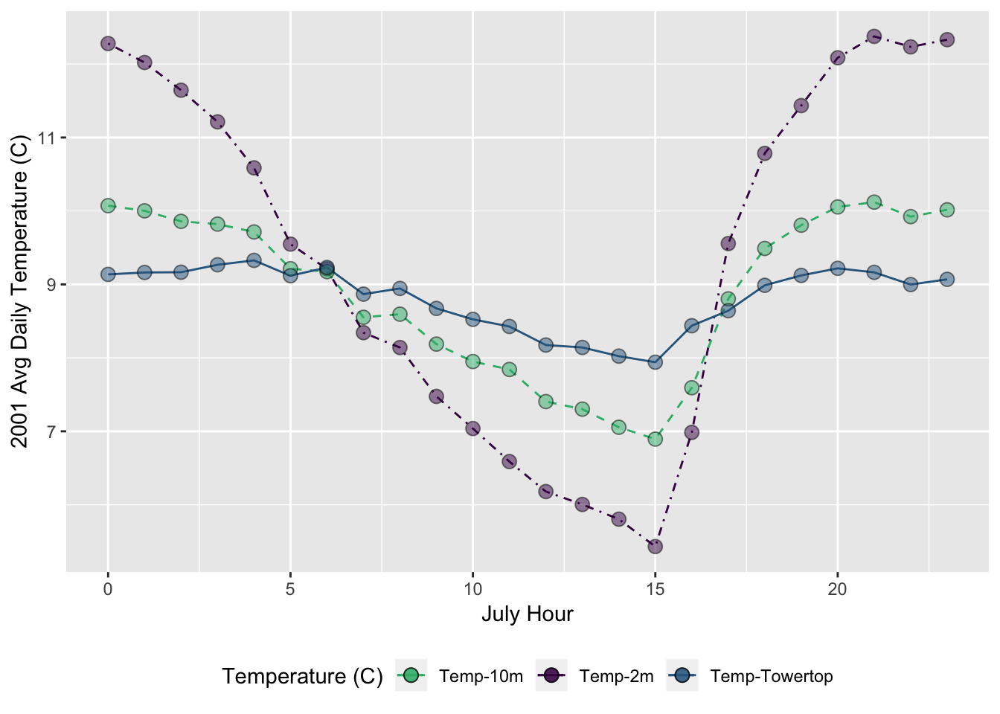
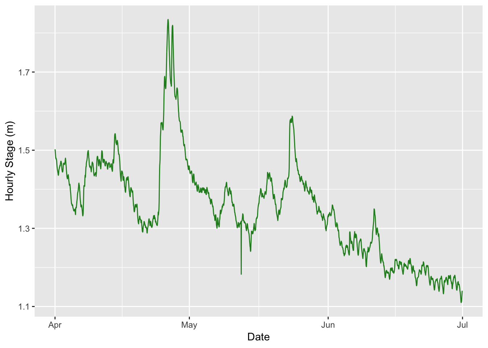
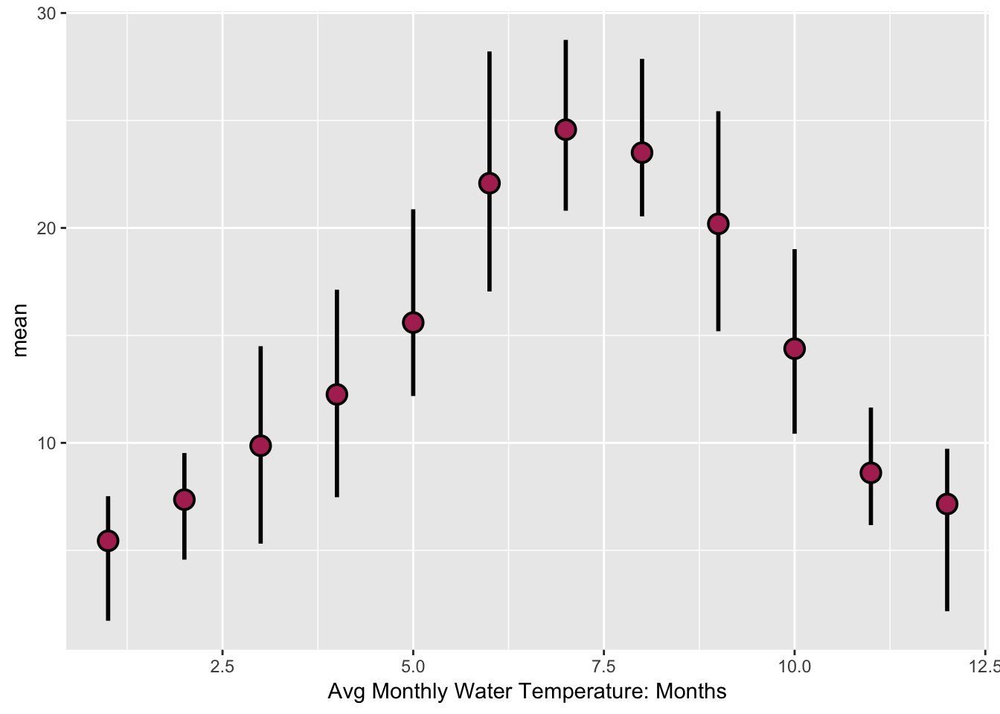

lubridate
- Learn the basic date/datetime data types in R
- Gain familiarity with converting dates & timezones
- Learn how to use the
lubridatepackage to more easily work with these data.- A few tricks about management of datetime data
These resources are very useful. Please read through them.
This is a great overview of times and dates in R from Bonnie Dixon’s talk at the Davis R-Users Group
Importantly, there are 3 basic time classes in R:
Dates (just dates, i.e., 2012-02-10)POSIXct (“ct” == calendar time, best class for dates with times)POSIXlt (“lt” == local time, enables easy extraction of specific components of a time, however, remember that POXIXlt objects are lists)So, for some brief examples/discussion about each of these classes, please read below. Unfortunately converting dates & times in R into formats that are computer readable can be frustrating, mainly because there is very little consistency. In particular, if you are importing things from Excel, keep in mind dates can get especially weird1, depending on the operating system you are working on, the format of your data, etc.
1 For example Excel stores dates as a number representing days since 1900-Jan-0, plus a fractional portion of a 24 hour day (serial-time), but in OSX (Mac), it is 1904-Jan-0.
The Date class in R can easily be converted or operated on numerically, depending on the interest. Let’s make a string of dates to use for our example:
sample_dates_1 <- c("2016-02-01", "2016-03-21", "2016-10-05", "2017-01-01", "2017-02-18") notice we have dates across two years hereSo to translate these into the Date class in R, we need to do a few things…first notice our sample dates are in a very nice order (YYYY-MM-DD). This works well with the function as.Date:
as.Date(sample_dates_1)What happens with different orders…say MM-DD-YYYY?
# Some sample dates:
sample_dates_2 <- c("02-01-2016", "03-21-2016", "10-05-2016", "01-01-2017", "02-18-2017")
as.Date(sample_dates_2) # well that doesn't work## [1] "0002-01-20" NA "0010-05-20" "0001-01-20" NAWell, the reason is the computer expects one thing, but is getting something else. Remember, write code you can read and your computer can understand. So we need to give some more information here so R will interpret our data correctly.
# Some sample dates:
sample_dates_2 <- c("02-01-2016", "03-21-2016", "10-05-2016", "01-01-2017", "02-18-2017")
as.Date(sample_dates_2, format = "%m-%d-%Y" ) # date code preceded by "%"## [1] "2016-02-01" "2016-03-21" "2016-10-05" "2017-01-01" "2017-02-18"To see a list of the date-time format codes in R, check out this page and table, or you can use: ?(strptime)
The nice thing is this method works well with pretty much any format, you just need to provide the associated codes and structure:
as.Date("2016/01/01", format="%Y/%m/%d")=2016-01-01
as.Date("05A21A2011", format="%mA%dA%Y")=2011-05-21
Challenge:
Format this date with the
as.Datefunction:Jul 04, 2017
It’s possible to use dates in calculations as well, as long as they are formatted in the same data type (i.e., both are date in this case).
Make some fake dates
# format a value as `date`
dt1 <- as.Date("2017-07-11")
dt1## [1] "2017-07-11"# non-standard formats must be specified using format=
dt2 <- as.Date("04/22/2016", format = "%m/%d/%Y")
dt2## [1] "2016-04-22"dt3 <- as.Date("October 6, 2014", format = "%B %d, %Y")
dt3## [1] "2014-10-06"Now some calculations
# subtract differences in dates
print(dt1 - dt2)## Time difference of 445 days# or look at differences in alternate scales
print(difftime(dt1, dt2, units = "weeks"))## Time difference of 63.57143 weeksYou can also sequence along by a given interval to create a timeseries.
six.weeks <- seq(dt1, length = 6, by = "week")
six.weeks## [1] "2017-07-11" "2017-07-18" "2017-07-25" "2017-08-01" "2017-08-08"
## [6] "2017-08-15"Challenge:
Create a sequence of 10 dates with a 2 week interval starting on 2011-02-15
lubridate package with DatesThe lubridate package will handle 90% of the date & datetime issues you need to deal with. It is fast, much easier to work with, and I recommend using it wherever possible. Do keep in mind sometimes you need to fall back on the base R functions (i.e., as.Date()).
library(lubridate)
Same idea here, just simpler to type, read, write.
lubridate::ymd("2016/01/01")=2016-01-01lubridate::ymd("2011-03-19")=2011-03-19lubridate::mdy("Feb 19, 2011")=2011-02-19lubridate::dmy("22051997")=1997-05-22POSIXctWhen working with times, the best class to use (generally) is POSIXct.
Making some POSXct objects:
tm1 <- as.POSIXct("2016-07-24 23:55:26")
tm1## [1] "2016-07-24 23:55:26 CDT"tm2 <- as.POSIXct("25072016 08:32:07", format = "%d%m%Y %H:%M:%S")
tm2## [1] "2016-07-25 08:32:07 CDT"# specify the time zone:
tm3 <- as.POSIXct("2010-12-01 11:42:03", tz = "GMT")
tm3## [1] "2010-12-01 11:42:03 GMT"Similar to as.Date there are two functions for each datetime class in R. as.POSIXct and as.POSIXlt. The arguments are the largely the same, but two important components to consider are a strptime function to help format the datetime (similar to as.Date), and a timezone argument tz, for adding the appropriate timezone.
Keep in mind the default datetime format is YMD HM or YMD HMS, so if you use that format you won’t need to use the strptime option.
strptime): as.POSIXct("2016-01-01 12:00", "America/Los_Angeles") = 2016-01-01 12:00:00as.POSIXct(strptime("2016/04/05 14:47",format = "%Y/%m/%d %H:%M"), "America/Los_Angeles") = 2016-04-05 14:47:00as.POSIXct(strptime("2016/04/05 4:47 PM",format = "%Y/%m/%d %H:%M PM"), "America/Los_Angeles") = 2016-04-05 04:47:00lubridate package & timezonesSame as before, now just add _hms or _hm to ymd and a tz arguement. lubridate will default to the POSIXct format.
lubridate::ymd_hm("2016-01-01 12:00", tz="America/Los_Angeles") = 2016-01-01 12:00:00lubridate::ymd_hm("2016/04/05 14:47", tz="America/Los_Angeles") = 2016-04-05 14:47:00lubridate::ymd_hms("2016/04/05 4:47:21 PM", tz="America/Los_Angeles") = 2016-04-05 16:47:21chron)The chron package may be helpful for these tasks, however, this may also be a suitable use of the POSIXlt class.
chron::as.chron("2013-07-24 23:55:26") = 1.591099710^{4}chron::as.chron("07/25/13 08:32:07", "%m/%d/%y %H:%M:%S") = 1.591135610^{4}For lubridate to work, you need the column datatype to be character or factor. The readr package (from the tidyverse) is smart and will try to guess for you. Problem is, it might convert your data for you without the settings (in this case the proper timezone). So here are few ways to work around this.
library(lubridate)
library(dplyr)
library(readr)
# read in some data and skip header lines
nfy1 <- read_csv("data/2015_NFY_solinst.csv", skip = 12)## Parsed with column specification:
## cols(
## Date = col_date(format = ""),
## Time = col_time(format = ""),
## ms = col_double(),
## Level = col_double(),
## Temperature = col_double()
## )head(nfy1)## # A tibble: 6 x 5
## Date Time ms Level Temperature
## <date> <time> <dbl> <dbl> <dbl>
## 1 2015-05-22 14:00 0 -8.68 0
## 2 2015-05-22 14:15 0 -8.29 0
## 3 2015-05-22 14:30 0 -8.29 0
## 4 2015-05-22 14:45 0 -8.29 0
## 5 2015-05-22 15:00 0 -8.30 0
## 6 2015-05-22 15:15 0 -8.29 0# import raw dataset & specify column types
nfy2 <- read_csv("data/2015_NFY_solinst.csv", col_types = "ccidd", skip=12)
# or just import with read.csv (defaults to factors for the dates)
nfy3 <- read.csv("data/2015_NFY_solinst.csv", skip = 12)
glimpse(nfy1) # notice the data types in the Date.Time and datetime cols## Observations: 7,764
## Variables: 5
## $ Date <date> 2015-05-22, 2015-05-22, 2015-05-22, 2015-05-22, 2...
## $ Time <time> 14:00:00, 14:15:00, 14:30:00, 14:45:00, 15:00:00,...
## $ ms <dbl> 0, 0, 0, 0, 0, 0, 0, 0, 0, 0, 0, 0, 0, 0, 0, 0, 0,...
## $ Level <dbl> -8.6834, -8.2928, -8.2914, -8.2901, -8.2955, -8.29...
## $ Temperature <dbl> 0, 0, 0, 0, 0, 0, 0, 0, 0, 0, 0, 0, 0, 0, 0, 0, 0,...glimpse(nfy2)## Observations: 7,764
## Variables: 5
## $ Date <chr> "2015/05/22", "2015/05/22", "2015/05/22", "2015/05...
## $ Time <chr> "14:00:00", "14:15:00", "14:30:00", "14:45:00", "1...
## $ ms <int> 0, 0, 0, 0, 0, 0, 0, 0, 0, 0, 0, 0, 0, 0, 0, 0, 0,...
## $ Level <dbl> -8.6834, -8.2928, -8.2914, -8.2901, -8.2955, -8.29...
## $ Temperature <dbl> 0, 0, 0, 0, 0, 0, 0, 0, 0, 0, 0, 0, 0, 0, 0, 0, 0,...glimpse(nfy3)## Observations: 7,764
## Variables: 5
## $ Date <fct> 2015/05/22, 2015/05/22, 2015/05/22, 2015/05/22, 20...
## $ Time <fct> 14:00:00, 14:15:00, 14:30:00, 14:45:00, 15:00:00, ...
## $ ms <int> 0, 0, 0, 0, 0, 0, 0, 0, 0, 0, 0, 0, 0, 0, 0, 0, 0,...
## $ Level <dbl> -8.6834, -8.2928, -8.2914, -8.2901, -8.2955, -8.29...
## $ Temperature <dbl> 0, 0, 0, 0, 0, 0, 0, 0, 0, 0, 0, 0, 0, 0, 0, 0, 0,...# make a datetime col:
nfy2$datetime <- paste(nfy2$Date, " ", nfy2$Time, sep = "")
# convert Date Time to POSIXct in local timezone using lubridate
nfy2$datetime_test <- as_datetime(nfy2$datetime,
tz="America/Los_Angeles")
# convert using the ymd_functions
nfy2$datetime_test2 <- ymd_hms(nfy2$datetime, tz="America/Los_Angeles")
# or wrap in as.character()
nfy1$datetime <- ymd_hms(as.character(paste0(nfy1$Date," ", nfy1$Time)), tz="America/Los_Angeles")
tz(nfy1$datetime)## [1] "America/Los_Angeles"So, now that we have a decent idea how to format these things, let’s look at some real data, try to format and plot. Let’s use the Mauna Loa meterological data, collected every minute for the year 2001. This dataset has 459,769 observations for 9 different metrics of wind, humidity, barometric pressure, air temperature, and precipitation. Download this dataset here. Save it to your data/ folder. Alternatively, you can find it on the R-DAVIS website in the Resources->Datasets tab.
# let's load our climate data from our previous lesson:
# what's different between RDS files and RDA (or Rdata) files?
# rds
mloa <- readRDS("data/mauna_loa_met_2001_minute.rds")
# rda
load("data/mauna_loa_met_2001_minute.rda")
library(lubridate, warn.conflicts = F)
library(dplyr, warn.conflicts = F)
summary(mloa_2001)## filename siteID year month
## Length:459769 MLO:459769 Min. :2001 Min. : 1.000
## Class :character 1st Qu.:2001 1st Qu.: 3.000
## Mode :character Median :2001 Median : 6.000
## Mean :2001 Mean : 6.474
## 3rd Qu.:2001 3rd Qu.:10.000
## Max. :2001 Max. :12.000
## day hour24 min windDir
## Min. : 1.00 Min. : 0.00 Min. : 0.00 Min. :-999.0
## 1st Qu.: 8.00 1st Qu.: 5.00 1st Qu.:15.00 1st Qu.: 115.0
## Median :15.00 Median :11.00 Median :30.00 Median : 156.0
## Mean :15.44 Mean :11.43 Mean :29.51 Mean : 144.5
## 3rd Qu.:22.00 3rd Qu.:18.00 3rd Qu.:45.00 3rd Qu.: 236.0
## Max. :31.00 Max. :23.00 Max. :59.00 Max. : 360.0
## windSpeed_m_s windSteady baro_hPa temp_C_2m
## Min. :-99.900 Min. :-9 Min. :-999.9 Min. :-999.900
## 1st Qu.: 1.900 1st Qu.:-9 1st Qu.:-999.9 1st Qu.: 4.400
## Median : 3.500 Median :-9 Median :-999.9 Median : 6.900
## Mean : 1.229 Mean :-9 Mean :-999.9 Mean : 4.747
## 3rd Qu.: 5.900 3rd Qu.:-9 3rd Qu.:-999.9 3rd Qu.: 9.400
## Max. : 20.500 Max. :-9 Max. :-999.9 Max. : 18.900
## temp_C_10m temp_C_towertop rel_humid precip_intens_mm_hr
## Min. :-999.90 Min. :-999.900 Min. :-99.00 Min. :-99.0000
## 1st Qu.: 4.90 1st Qu.: 5.600 1st Qu.: 14.00 1st Qu.: 0.0000
## Median : 6.90 Median : 7.200 Median : 28.00 Median : 0.0000
## Mean : -46.69 Mean : 1.539 Mean : 31.82 Mean : -0.8066
## 3rd Qu.: 8.60 3rd Qu.: 8.800 3rd Qu.: 57.00 3rd Qu.: 0.0000
## Max. : 16.90 Max. : 16.200 Max. :138.00 Max. : 60.0000names(mloa_2001)## [1] "filename" "siteID" "year"
## [4] "month" "day" "hour24"
## [7] "min" "windDir" "windSpeed_m_s"
## [10] "windSteady" "baro_hPa" "temp_C_2m"
## [13] "temp_C_10m" "temp_C_towertop" "rel_humid"
## [16] "precip_intens_mm_hr"One of the important components to consider is each of the datetime columns has been separated…so how do we get them into one column so we can format it as a datetime? The answer is the paste function.
paste() allows pasting text or vectors (& columns) by a given separator that you specifypaste0() is the same thing, but defaults to using a , as the separator.# we need to make a datetime column...let's use paste
mloa_2001$datetime <- paste0(mloa_2001$year,"-", mloa_2001$month, "-", mloa_2001$day," ", mloa_2001$hour24, ":", mloa_2001$min) # this makes a character column
head(mloa_2001$datetime) # character vector but not POSIXct yet## [1] "2001-1-1 0:0" "2001-1-1 0:1" "2001-1-1 0:2" "2001-1-1 0:3"
## [5] "2001-1-1 0:4" "2001-1-1 0:5"# we can nest this within a lubridate function to convert directly to POSIXct
mloa_2001$datetime <- ymd_hm(mloa_2001$datetime, tz="Pacific/Honolulu")
# all in one step
mloa_2001$datetime <- ymd_hm(paste0(mloa_2001$year,"-", mloa_2001$month, "-", mloa_2001$day," ", mloa_2001$hour24, ":", mloa_2001$min), tz = "Pacific/Honolulu")
summary(mloa_2001) # notice a new column called "datetime"## filename siteID year month
## Length:459769 MLO:459769 Min. :2001 Min. : 1.000
## Class :character 1st Qu.:2001 1st Qu.: 3.000
## Mode :character Median :2001 Median : 6.000
## Mean :2001 Mean : 6.474
## 3rd Qu.:2001 3rd Qu.:10.000
## Max. :2001 Max. :12.000
## day hour24 min windDir
## Min. : 1.00 Min. : 0.00 Min. : 0.00 Min. :-999.0
## 1st Qu.: 8.00 1st Qu.: 5.00 1st Qu.:15.00 1st Qu.: 115.0
## Median :15.00 Median :11.00 Median :30.00 Median : 156.0
## Mean :15.44 Mean :11.43 Mean :29.51 Mean : 144.5
## 3rd Qu.:22.00 3rd Qu.:18.00 3rd Qu.:45.00 3rd Qu.: 236.0
## Max. :31.00 Max. :23.00 Max. :59.00 Max. : 360.0
## windSpeed_m_s windSteady baro_hPa temp_C_2m
## Min. :-99.900 Min. :-9 Min. :-999.9 Min. :-999.900
## 1st Qu.: 1.900 1st Qu.:-9 1st Qu.:-999.9 1st Qu.: 4.400
## Median : 3.500 Median :-9 Median :-999.9 Median : 6.900
## Mean : 1.229 Mean :-9 Mean :-999.9 Mean : 4.747
## 3rd Qu.: 5.900 3rd Qu.:-9 3rd Qu.:-999.9 3rd Qu.: 9.400
## Max. : 20.500 Max. :-9 Max. :-999.9 Max. : 18.900
## temp_C_10m temp_C_towertop rel_humid precip_intens_mm_hr
## Min. :-999.90 Min. :-999.900 Min. :-99.00 Min. :-99.0000
## 1st Qu.: 4.90 1st Qu.: 5.600 1st Qu.: 14.00 1st Qu.: 0.0000
## Median : 6.90 Median : 7.200 Median : 28.00 Median : 0.0000
## Mean : -46.69 Mean : 1.539 Mean : 31.82 Mean : -0.8066
## 3rd Qu.: 8.60 3rd Qu.: 8.800 3rd Qu.: 57.00 3rd Qu.: 0.0000
## Max. : 16.90 Max. : 16.200 Max. :138.00 Max. : 60.0000
## datetime
## Min. :2001-01-01 00:00:00
## 1st Qu.:2001-03-29 06:57:00
## Median :2001-06-24 06:13:00
## Mean :2001-06-30 15:28:42
## 3rd Qu.:2001-10-07 00:34:00
## Max. :2001-12-31 23:59:00head(mloa_2001$datetime) # in POSIXct## [1] "2001-01-01 00:00:00 HST" "2001-01-01 00:01:00 HST"
## [3] "2001-01-01 00:02:00 HST" "2001-01-01 00:03:00 HST"
## [5] "2001-01-01 00:04:00 HST" "2001-01-01 00:05:00 HST"Challenge with
dplyr&ggplot
- Remove the NA’s (-99 and -999) in
rel_humid,temp_C_2m,windSpeed_m_s- Use
dplyrto calculate the mean monthly temperature (temp_C_2m) using thedatetimecolumn (HINT: look atlubridatefunctions likemonth())- Make a ggplot of the avg monthly temperature
- Make a ggplot of the daily average temperature for July (HINT: try
yday()function with somesummarize()indplyr)
Solutions
| mon | avg_temp_2m | avg_temp_10m | avg_temp_tower |
|---|---|---|---|
| Jan | 6.29 | 6.72 | 7.23 |
| Feb | 4.18 | 4.48 | 4.74 |
| Mar | 4.87 | 5.06 | 5.34 |
| Apr | 5.70 | 5.72 | 5.89 |
| May | 6.95 | 7.07 | 7.13 |
| Jun | 7.51 | 7.40 | 7.46 |
| Jul | 9.56 | 8.96 | 8.84 |
| Aug | 9.36 | 8.85 | 8.81 |
| Sep | 8.43 | 8.27 | 8.38 |
| Oct | 7.79 | 7.60 | 7.81 |
| Nov | 8.19 | 8.40 | 8.71 |
| Dec | 7.77 | 7.74 | 8.17 |
##
## Attaching package: 'magrittr'## The following object is masked from 'package:purrr':
##
## set_names## The following object is masked from 'package:tidyr':
##
## extract## Observations: 23
## Variables: 4
## $ day <int> 1, 6, 7, 8, 9, 10, 11, 12, 13, 14, 16, 17, 18, ...
## $ avg_temp_2m <dbl> 7.129730, 13.271782, 11.039383, 10.856874, 11.5...
## $ avg_temp_10m <dbl> 6.594595, 11.164356, 11.024387, 10.486253, 11.0...
## $ avg_temp_tower <dbl> 6.364865, 9.789604, 10.967694, 10.474180, 10.96...## Observations: 24
## Variables: 4
## $ `hour(datetime)` <int> 0, 1, 2, 3, 4, 5, 6, 7, 8, 9, 10, 11, 12, 13,...
## $ avg_temp_2m <dbl> 12.279380, 12.021068, 11.643950, 11.213201, 1...
## $ avg_temp_10m <dbl> 10.071898, 10.001907, 9.858428, 9.821122, 9.7...
## $ avg_temp_tower <dbl> 9.136405, 9.162726, 9.165874, 9.267327, 9.327...
Let’s practice with another data file, a logger that records water temperature and river stage every 15 minutes from the NF American River. You can download the file by right clicking on the webpage, or simply use the web URL. We’ve practiced both now. (The file is also available on the R-DAVIS website in the Resources->Datasets tab.)
This dataset has 35,038 observations for water temperature, and stage (pressure transducer info).
First part of the challenge: Read in and assign the data to your environment using either the direct webpage URL, or the downloaded file.
## Date Time ms Level
## 2014/08/06: 96 00:00:00: 365 Min. :0 Min. :0.7718
## 2014/08/07: 96 00:15:00: 365 1st Qu.:0 1st Qu.:1.1190
## 2014/08/08: 96 00:30:00: 365 Median :0 Median :1.3135
## 2014/08/09: 96 00:45:00: 365 Mean :0 Mean :1.3791
## 2014/08/10: 96 01:00:00: 365 3rd Qu.:0 3rd Qu.:1.5235
## 2014/08/11: 96 01:15:00: 365 Max. :0 Max. :4.7376
## (Other) :34462 (Other) :32848
## Temperature
## Min. : 1.724
## 1st Qu.: 8.197
## Median :13.258
## Mean :14.291
## 3rd Qu.:20.960
## Max. :28.748
## ## [1] "Date" "Time" "ms" "Level" "Temperature"Challenge
- Make a
datetimecolumn and format asPOSIXct- Calculate Weekly Mean, Max, Min Water Temperatures and plot as point or line plot (HINT:
dplyrfunction)- Calculate Hourly mean Level for April through June and make a line plot (using
ggplot2).- Make a ggplot geom_pointrange plot of the avg. max, min monthly temperatures.
Solutions
## Date Time ms Level Temperature datetime yr mon
## 1 2014/08/05 11:00:00 0 0.8245 23.069 2014-08-05 11:00:00 2014 8
## 2 2014/08/05 11:15:00 0 1.1457 22.023 2014-08-05 11:15:00 2014 8
## 3 2014/08/05 11:30:00 0 1.1485 22.030 2014-08-05 11:30:00 2014 8
## 4 2014/08/05 11:45:00 0 1.1482 22.035 2014-08-05 11:45:00 2014 8
## 5 2014/08/05 12:00:00 0 1.1504 22.033 2014-08-05 12:00:00 2014 8
## 6 2014/08/05 12:15:00 0 1.1495 22.028 2014-08-05 12:15:00 2014 8
## wk DOY hr
## 1 31 217 11
## 2 31 217 11
## 3 31 217 11
## 4 31 217 11
## 5 31 217 12
## 6 31 217 12## `summarise_each()` is deprecated.
## Use `summarise_all()`, `summarise_at()` or `summarise_if()` instead.
## To map `funs` over all variables, use `summarise_all()`
## `summarise_each()` is deprecated.
## Use `summarise_all()`, `summarise_at()` or `summarise_if()` instead.
## To map `funs` over all variables, use `summarise_all()`
This lesson was contributed by Ryan Peek.